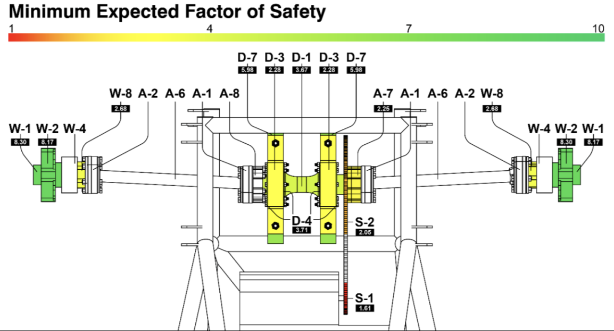

As-Built Drivetrain System
This drivetrain uses a locked differential (spool), constant velocity joints, and chain-sprocket transmission to deliver power. It was designed to be modular and modifiable to fit uncertain chassis constraints while withstanding extreme loading during racing.
The system receives torque via a front sprocket (S-1), transferring power through a chain (S-3) to a rear sprocket (S-2). A spool splits torque to both axles via CV joints and custom adapters, ending with wheel hubs connected by lug bolts.
Safety Factor Analysis
The front sprocket (S-1) has the lowest factor of safety at 1.61 under launch torque. Other components, like wheel hubs (W-1) and rotor hats (W-2), exceed 8.1. This intentional hierarchy ensures the sprocket fails first under overload, protecting critical parts.
Performance Considerations
- Launch: Peak torque of 722 Nm at the rear sprocket (361 Nm per axle)
- Cornering: 1.4G lateral load creates 283 Nm moment at the hub
- Braking: 342 Nm braking torque and 1.3G deceleration induce axial loads
- Gear Ratio: Stock ratio of 14:47 (front:rear sprocket) is adjustable
- Engine: 1990 Suzuki Katana, 65 hp, 40 Nm torque (unrestricted)